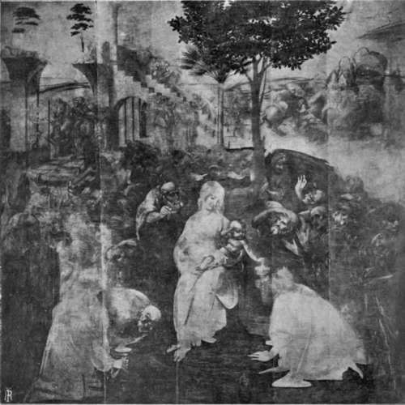

Chapter III. The Records, 1494-1519
Description
This section is from the book "Leonardo Da Vinci", by Edward McCurdy. Also available from Amazon: Leonardo Da Vinci.
Chapter III. The Records, 1494-1519
IN Vasari's life of II Cronaca Leonardo is mentioned as one of a commission appointed to consider the plan of construction of the great hall of the Council in the palace of the Signoria.
The plan agreed upon was carried out by II Cronaca with great promptitude. The great hall was built in 1495. Leonardo must have visited Florence either in 1494 or at the beginning of 1495. He then met Michelangelo, a youth of nineteen or twenty, who was also one of the commission.
In the disputes which according to Vasari were a constant feature of its meetings, there may have arisen that enmity between the two painters which finds expression in contemporary anecdote.
The visit was of brief duration. In 1495 he was back in Milan at work on a commission in the castle, as is shown by the letter to Ludovic, of this date, of an official, " Filippinus," which is referred to by Professor Uzielli.1
The fragments of the torn letter2 from Leonardo to the Duke conclude by reminding him of the commission to paint the Camerini, which apparently had taken the place of the commission for the statue, and which when the letter was written had also been for some time abandoned.
1 Uzielli (1896), p. 191.
2 C. A., 335 v.
All that is known of this commission is due to the researches of Dr. Miiller-Walde.1 The result is, however, fragmentary and enigmatic. The rooms were not ready for painting until the close of the year 1495. On November 14th Ambrogio Ferrari wrote of the vaulting of the Camerini that they had received the ground colouring and were then about to be painted. On the 8th of June, 1496, the Duke's secretary, Bartolommeo Calco wrote to the Archbishop of Milan, who was then in Venice, to say that the painter who was painting the Camerini had caused a certain scandal, in consequence of which he had departed, and instructing him if possible to get Perugino to complete the work. The Archbishop's reply was to the effect that Perugino had left Venice six months previously, and the senators knew nothing as to his whereabouts.
In May and November of the following year attempts were made in the Duke's name to obtain the services of Perugino through Guido and Ridolfo Baglioni, the rulers of Perugia. The estrangement between the Duke and the painter of the Camerini, who from the reference in Leonardo's letter must have been Leonardo, had therefore lasted about a year and a half.
The work was resumed in the spring of 1498, and the reports of one of the Duke's officials, Gualtiero, help to establish what was Leonardo's exact share in the work.
On March 22nd, 1498, he wrote: " As to the work upon the vaulted ceiling no time is being lost, so that I believe the masters will fulfil the promises they have made."
1 M.-W., Bei., I., in Jahrbuch, 1897.
On April 20th: " In the Saletta Negra it has been carried out as your Excellency commanded. Not only is the festoon painted on the wall, but when a part of it was painted the measurements were all changed by agreement of Messer Ambrogio with the master Leonardo, with result that it looks very well, and no time will be lost in finishing it."
On April 21st: "In the Saletta Negra no time will be lost. On Monday the large Camera delle ' asse,' i.e., the Camera della Torre will be stripped. The master Leonardo promises to finish it in September."
On April 23rd: "The large Camera delle 'asse' is stripped, and in the Camerino no time is being lost."
The last two extracts offer substantial reason for inference that the Saletta Negra is the same as the Camerino, i.e., it is according to Dr. Miiller-Walde the larger of the two Camerini on the right of the Camera della Torre, which had received the ground colouring and were ready for painting in November, 1495.
The mention of Leonardo's name in the despatch of April 20th with regard to the room is in the character of an adviser. In that of the following day he is more closely associated with the decoration of the Camera della Torre. This room has recently been completely restored in accordance with the original scheme. The design is entirely novel and effective. The trunks of trees are represented at regular spaces round the walls, and the branches spread out in arched leafy bowers upon the vaulted roof, and woven among them is a network of interlacing coils of rope with one of the recurrent patterns of the " intrecciamenti" which had a strange fascination for Leonardo as is shown by their repetition on corners where apparently the pen has played on pages of the Codice Atlantico, on the border of the dress of Mona Lisa, and on the " Cartelli," inscribed, " Leonardi Aca-demia Vici," which inscription I believe to have been as remote from anything of actual existence as is the scroll which encircles it.
Plate 10. The Adoration Of The Magi
A linari photo - Uffizi Gallery, Florence
The scheme of decoration of the Camera della Torre is the only work now visible in the Castle of Milan of which the design can be attributed to Leonardo. There is a preparatory study for it in a sheet of "intrecciamenti" in the Codice Atlantico (261 r. a) in which the arrangement of the coils looped round open spaces is almost exactly similar to that on the ceiling. Gualtiero's despatches refer only to the larger of the two Camerini, the Saletta Negra, and only mention Leonardo's presence there in association with others.
The eight Amorini discovered in 1893 m fresco, on the vaulting of the smaller of the two Camerini which is at the end of the passage from the Sala Verde, are not assigned to him by any documentary evidence, and it seems to me quite impossible to attribute them to him on internal grounds. They are utterly lacking in the delicacy of line which is the inherent quality of his work. They seem to be later productions of the Milanese school.
Continue to:
Tags
leonardo da vinci, pictures, drawings, galleries, statues, da vinci